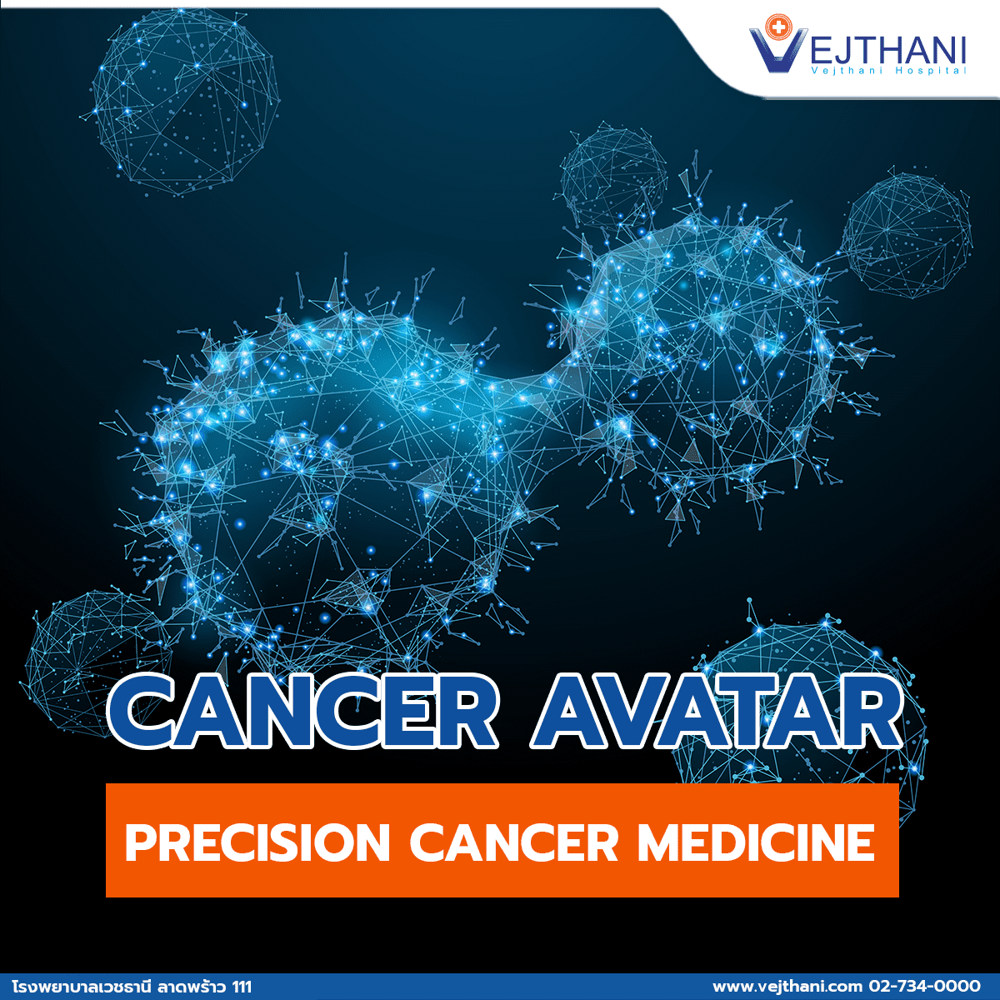
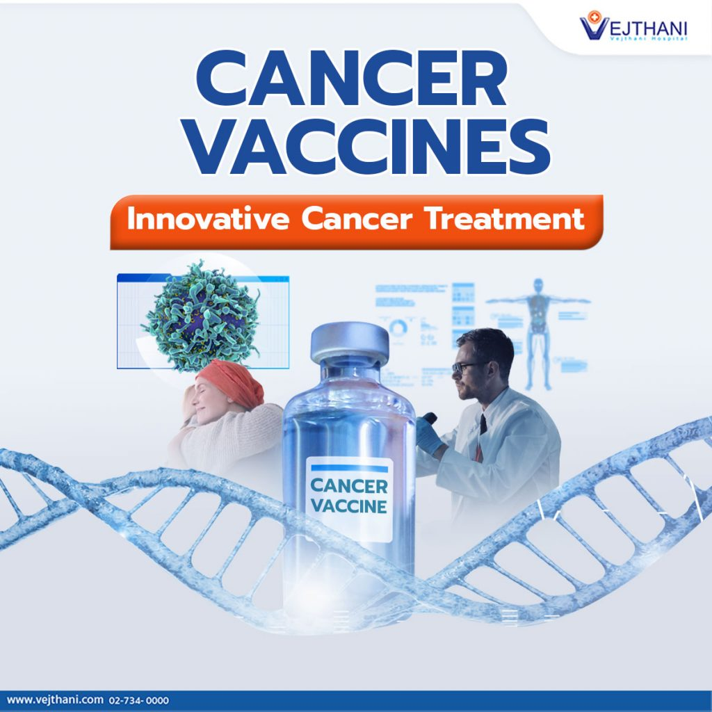
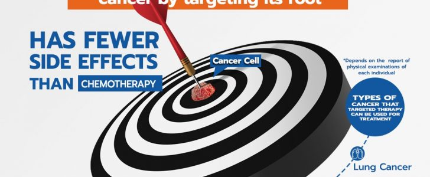
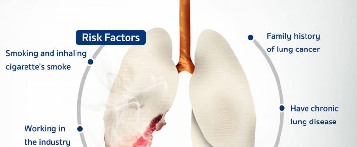
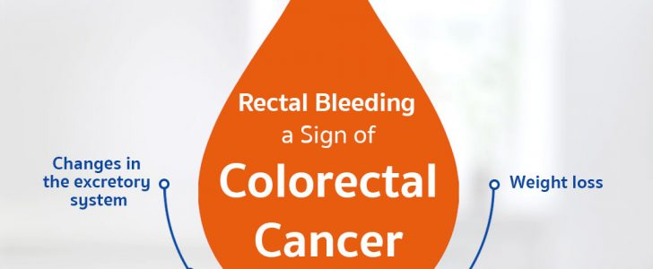
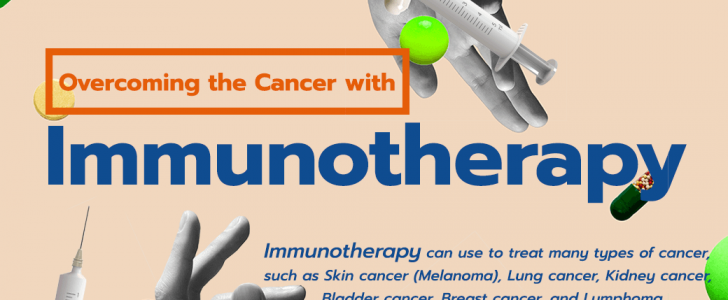
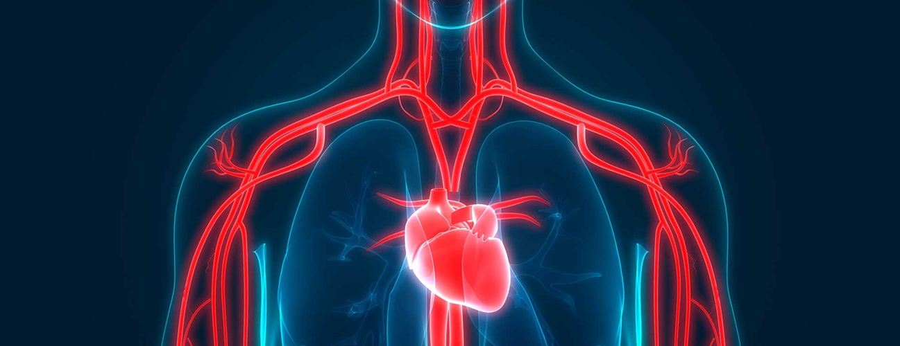
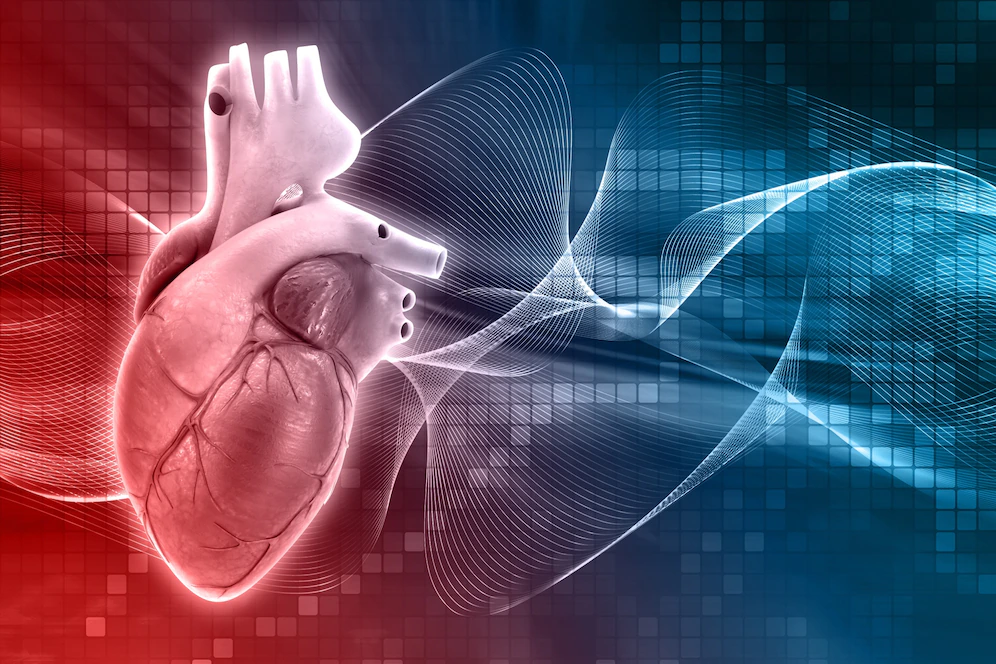

Cancer is a disease in which some
of the body's cells grow uncontrollably
and spread to other parts of the body. Cancer can start almost anywhere in the human
body, which is made up of trillions of cells
Find and Treat
the Root Cause of Cancer from Precision Cancer Medicine
Data from the National Cancer Institute have found that there
were 139,206 new cancer patients in 2021 and 84,073 ones of
which died. The top five cancer types that are the most
prevalent among Thai people are liver and bile duct cancer,
breast cancer, lung cancer and colon and rectal cancer as
well as cervical cancer. Cancer treatment has been vastly
developed in the present days in terms of both screening
technologies and chemotherapy that are designed to reduce
the chance of side effects and personalized treatment plan
for each patient.
Dr. Vigrom Jennetisin, a medical oncologist at Vejthani Hospital, said the most important factor about cancer treatment is finding the cause of the cancer in each patient. The cause can be found by conducting screening test on cancerous cells to determine what mechanism has caused the cells to become cancerous and investigate what is the best medication to inhibit the cancer growth on each patient. The treatment could therefore be more precise and effective. This kind of treatment approach is called Precision Cancer Medicine. This is because a variety
of mechanisms can result in a growth of cancer in the same organ

Cancer Avatar - Precision Cancer Medicine
Generally, treating cancer with medications requires
a waiting period to see how the patient responds to the given drugs. If the response is not as expected,
the type of drugs may need to be changed.
However, currently, an innovative treatment called Cancer Avatar is used to deliver precise and suitable drugs to patients
from the very beginning of the treatment process.
Dr. Vigrom Jennetisin, a medical oncologist at Vejthani Hospital, explained that treating cancer with Precision Medicine or
personalized treatment approach is done by gene examinations to find the mutations that occurred in the cancer cells. The
examination results will be used as the data for the doctor to determine the drugs that will be most suitable for the mutations.
Although Precision Medicine is a personalized treatment, after medications have been given, the patient’s response to those medications
needs to be constantly monitored for some time. The patient will undergo CT scan, which will detect cancer cells in the body. If the response
to the treatment is poor or does not meet expectations, the type of drugs that have been used may need to be changed to increase the efficacy of
the treatment

CANCER VACCINE, a new option for cancer treatment
Cancer diseases have the highest fatality rate among Thais. The number of cancer patients is increasing each year with
a 90% cause of the disease arising from external factors and lifestyles that raise the risk of cancer. Certain food
consumptions, stress, viral infections, smokes, consumption of alcohol are some of the factors. Cancer treatment has
therefore been developed to boost its efficacy on patients while reducing the side effects of the drugs to be as low as possible
Find and Treat the
Root Cause of Cancer from Precision Cancer Medicine
Data from the National Cancer Institute have found that there were
139,206 new cancer patients in 2021 and 84,073 ones of which died.
The top five cancer types that are the most prevalent among Thai
people are liver and bile duct cancer, breast cancer, lung cancer
and colon and rectal cancer as well as cervical cancer. Cancer treatment
has been vastly developed
“Targeted Therapy”,
a precise medication that stops cancer by targeting its root
Targeted Therapy is a medication for cancer that has been developed to be exceptionally precise. Meaning,
it specifically targets cells that have a mutated receptor or targets the receptor that has the primary mechanism
of developing cancer. This leads to obtaining a good result of the treatment and a positive response to medications.
More importantly, “targeted therapy has fewer side effects compared to receiving chemotherapy.

Early detection of “lung cancer” leads to a chance of survival
“Lung cancer” is considered as one of the most detected cancers that have taken plenty of people’s lives in Thailand.
This is because the first stage of lung cancer is often asymptomatic. By the time the symptoms show through, the cancer
progresses to the later stage. Doctors therefore, recommend those who are at risk of developing lung cancer to

Avoid the Risk Factors to Reduce the Risk of Having Lung Cancer
Lung cancer is caused by uncontrolled abnormal cell’s growth in tissues of the lung that form a malignant lung tumor. As you know, smoking is the main risk factor of lung cancer but
there are other risk factors of lung cancer that you may not know

Blood in the Stool, a Sign of Colorectal Cance
A lot of people might misunderstand that blood in the stool is only a sign of hemorrhoid,
so they ignore it, but the truth is, blood in the stool is also a sign of colorectal cancer. Colorectal
cancer doesn’t always have a symptom especially in its early stage.
However, if there are any symptoms, the following can be included

Overcoming the Cancer with Immunotherapy
Immunotherapy is a type of cancer treatment that relies on the function of the patient’s immune system.
Typically, the immune system keeps monitoring and destroying all of the foreign substances, such as germs
or cancer cells. However, it cannot detect cancer cells sometimes. Immunotherapy helps boost the effectiveness
of the immune system to detect and fight against the cancer
What is diabetes
Diabetes is a chronic (long-lasting)
health condition that affects how your
body turns food into energy.
Diabetes is a chronic, metabolic disease characterized by elevated levels of blood glucose
(or blood sugar), which leads over time to serious damage to the heart, blood vessels, eyes, kidneys
and nerves. The most common is type 2 diabetes, usually in adults, which occurs when the body becomes
resistant to insulin or doesn't make enough insulin. In the past 3 decades the prevalence of type 2 diabetes
has risen dramatically in countries of all income levels. Type 1 diabetes, once known as juvenile diabetes or
insulin-dependent diabetes, is a chronic condition in which the pancreas produces little or no insulin by itself.
For people living with diabetes, access to affordable treatment, including insulin, is critical to their survival.
There is a globally agreed target to halt the rise in diabetes and obesity by 2025.
About 422 million people worldwide have diabetes, the majority living in low-and middle-income countries, and 1.5 million deaths are directly attributed to diabetes each year. Both the number of cases and the prevalence
of diabetes have been steadily increasing over the past few decades.
A Complete List of Diabetes Medications
Medications for type 1 diabetes
If you have type 1 diabetes, your body can’t make its own insulin. The goal of
treatment is to replace the insulin that your pancreas can’t make.
Diabetes is a condition that leads to high levels of blood glucose (sugar) in the body.
This reaction happens when your body can’t make or use the
hormone insulin like it’s supposed to. Produced by the pancreas,
insulin helps your body use the sugar from the food you eat.
There are two major types of diabetes: type 1 diabetes and type 2
diabetes. People with either type need medications to help manage their blood sugar levels.
The types of medications you take will depend on the type of
diabetes you have. Learn more about the available treatment
options.
Insulin
Insulin is the most common type of
medication used in type 1 diabetes treatment. There are more than 20 types sold in the United States.
It’s given as an infusion under the skin (with the help of an
insulin pump) or as an injection.
Short-acting insulin:
Regular or “short-acting” insulin may reach the bloodstream 30 minutes after injection and peak
2-3 hours afterward. These injections also work up to 3-6 hours.
Rapid-acting insulin:
As the name suggests, rapid-acting insulin works within 15 minutes. The peak time is 1 to
2 hours after use, and the medication lasts between 2 and 4 hours.
Intermediate-acting insulin:
Intermediate-acting insulin works about 2-4 hours after use, with an average peak time of 12 hours.
You can expect this type of insulin to last between 12 and 18 hours.
Medications for type 2 diabetes
If you have type 2 diabetes, your body makes insulin
but no longer uses it well. Your body can’t make enough
insulin to keep your blood sugar levels within an optimal
range.
The goal of your treatment is to help your body use insulin
better or to get rid of extra glucose in your blood.
Most medications for type 2 diabetes are oral drugs. However
, insulin or injectables may also be used. Some of these
medications are combinations of more than one diabetes
drug.
Insulin
Some people with type 2 diabetes may also need to take insulin.
The same types of insulin used to treat type 1 diabetes can also
treat type 2 diabetes.
A doctor may recommend the aforementioned types of insulin
used in type 1 diabetes treatment for type 2 diabetes.
As with type 1 diabetes, this depends on the type of
insulin needed and how severe your insulin deficiency
is. See the above types of insulin to discuss with a
doctor.
Alpha-glucosidase inhibitors
These medications help your body break down starchy foods and table sugar. This effect lowers your blood sugar levels.
When taken as prescribed, these medications won’t cause hypoglycemia (low blood sugar). However, your risk of hypoglycemia may be greater if you take them with other types of diabetes medications.
For best results, take alpha-glucosidase inhibitors before meals. These medications include:
Biguanides
Biguanides decrease how much glucose your liver makes. They also decrease how much glucose your intestines absorb, help your muscles absorb glucose, and make your body more sensitive to insulin.
The most common biguanide is metformin (Glumetza, Riomet, Riomet ER).
Dopamine-2 agonist
Bromocriptine (Cycloset, Parlodel) is a dopamine-2 agonist.
It’s unknown exactly how this drug treats type 2 diabetes.
It may affect rhythms in your body and prevent insulin
resistance. According to one 2015 reviewTrusted Source,
dopamine-2 agonists may also improve other related health
concerns, such as high cholesterol or weight management..

Heart Disease Communications Kit
The term heart disease refers to several types of
heart conditions, including coronary artery disease and
heart attack.
Although heart disease is sometimes thought of as a man’s
disease, almost as many
women as men die each year of heart disease in the United
States.
Women and Heart Disease
Learn about women’s signs and symptoms of heart disease.
Find resources, facts, and statistics about women and heart
disease.

How Much Do You Know About Heart Disease?
Share this quiz to see how much your
audiences know about heart disease prevention and management.
Alliance for the Million Hearts® Campaign Partner Toolkit
Health care professionals can use these resources
developed by Million Hearts® and the CDC Foundation to
encourage people to practice heart-healthy habits that can
help lower their risk for heart disease and stroke.
Strategies to prevent heart disease
1.Don't smoke or use tobacco
One of the best things you can do for your heart is to stop smoking or using smokeless tobacco. Even if you're not a smoker, be sure to avoid secondhand smoke.
Chemicals in tobacco can damage the heart and blood vessels. Cigarette smoke reduces the oxygen in the blood, which increases blood pressure and heart rate because the heart has to work harder to supply enough oxygen to the body and brain.
There's good news though. The risk of heart disease starts to drop in as little as a day after quitting. After a year without cigarettes, the risk of heart disease drops to about half that of a smoker. No matter how long or how much you smoked, you'll start reaping rewards as soon as you quit.
2. Get moving: Aim for at least 30 to 60 minutes of activity daily
Regular, daily physical activity can lower the risk of heart disease. Physical activity helps control your weight. It also reduces the chances of developing other conditions that may put a strain on the heart, such as high blood pressure, high cholesterol and type 2 diabetes.
If you haven't been active for a while, you may need to slowly work your way up to these goals, but in general, you should do aim for at least:
3. Eat a heart-healthy diet
A healthy diet can help protect the heart,
improve blood pressure and cholesterol, and reduce
the risk of type 2 diabetes. A heart-healthy eating
plan includes:
4. Maintain a healthy weight
Being overweight — especially around the middle of the body — increases the risk of heart disease. Excess weight can lead to conditions that increase the chances of developing heart disease — including high blood pressure, high cholesterol and type 2 diabetes.
The body mass index (BMI) uses height and weight to determine whether a person is overweight or obese. A BMI of 25 or higher is considered overweight and is generally associated with higher cholesterol, higher blood pressure, and an increased risk of heart disease and stroke.
5. Get good quality sleep
People who don't get enough sleep have a higher risk of obesity, high blood pressure, heart attack, diabetes and depression.
Most adults need at least seven hours of sleep each night.
Make sleep a priority in your life. Set a sleep schedule and
stick to it by going to bed and waking up at the same times
each day. Keep your bedroom dark and quiet, so it's easier to
sleep.